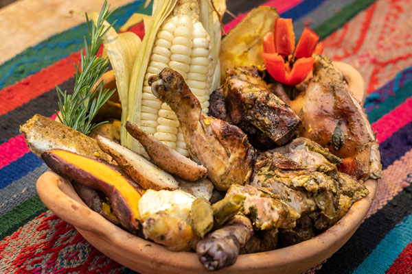

Pachamanca

Descripción
Es un plato típico de lo Andes del Perú lleno de gran valor histórico y tradición. De los más emblemáticos de la gastronomía peruana.
Ingredientes
- 2 kg de carne de chancho cerdo
- 1 kg de pollo cortado en trozos
- 1 kg de cordero
- 1 kg de papas medianas
- 1 kg de habas en su vaina
- 1 kg de camote (boniato, batata, patata dulce)
- 3 choclos (maíz)
- Pancas de choclo hojas, la cantidad suficiente para cubrir completamente la base y la parte superior de la olla donde vas a cocinar.
- 1 taza de huacatay
- 1 taza de chincho
- 1 taza de culantro (cilantro)
- 1 rama de romero
- 2 cucharadas de ají colorado
- 2 cucharadas de ají amarillo
- 2 cucharadas de ajo molido
- 1 cucharadita de tomillo
- Un poco de vinagre
- 1 vaso de chicha de jora o cerveza negra
- Orégano
- Sal y pimienta
Pasos
- Lo primero que vamos a hacer es licuar todas las hierbas. Pon en una licuadora el culantro, el chincho y el huacatay y licúalo con un poco de agua y reserva.
- A continuación vamos a preparar el macerado. Pon en un bol o recipiente la mezcla de las hierbas y agrega el ají colorado, el ají amarillo, el ajo molido, un poquito de tomillo, 4 cucharadas de vinagre, 1 vaso de chicha de jora o en su defecto cerveza negra (si tienes los dos, entonces medio vaso de cada uno), orégano, sal y pimienta al gusto y mezcla todo hasta que todos los ingredientes queden bien compenetrados.
- Ahora agrega las presas de carne previamente lavadas y cúbrelas con el macerado intentando que llegue a todas las partes de las presas. Ahora tenemos que macerar. Si puedes, lo mejor es hacerlo de un día para otro pero si no es posible entonces al menos déjalo unas 3 horas macerando para que los sabores queden más intensos.
- Prepara una olla lo suficientemente grande para todos los ingredientes. En el fondo coloca varias pancas de choclo de manera que la base de la olla quede cubierta totalmente.
- A continuación agrega los ingredientes en el siguiente orden y entre capa y capa agrega un poquito del macerado: papas, camote, carnes, choclos, habas y la rama de romero. Si sobra macerado agrégalo.
- Ahora cubre totalmente con las pancas los ingredientes intentando no dejar ni un espacio libre por donde se escape el vapor. Recuerda que la Pachamanca se cocina a vapor y por eso debemos tener todo muy bien sellado.
- Tapa la olla y cocina a fuego medio por una hora. Por si no estás seguro del tiempo puedes usar un palito para pinchar y probar si los camotes y las papas están listos. Si todavía les falta vuelve a cubrir todo muy bien. Otro truco que no he probado pero que he leído es que cuando las vainas de las habas se abren significa que ya está la Pachamanca.
Home